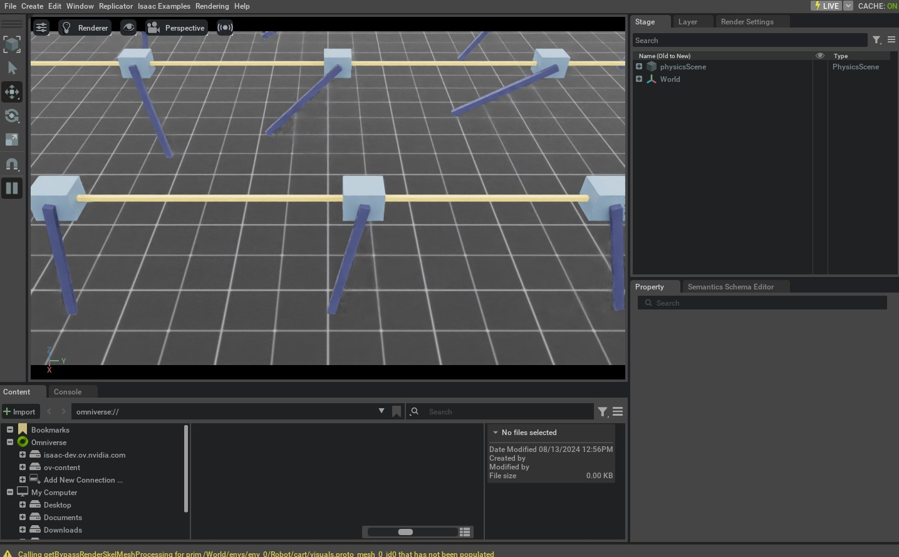

此前的教程需要手动向 Scene 中生成 Asset，并逐个创建用于交互的 Object 实例。随着 Scene 变得复杂，这种方式会越来越繁琐。本教程将介绍 scene.InteractiveScene，使用统一接口生成 Prim 并管理仿真中的实体。
从较高层次看，Interactive Scene 是一组 Scene 实体的集合。实体既可以是 Ground Plane、Light 等非交互式 Prim，也可以是 Articulation、Rigid Object 等交互式 Prim，还可以是 Camera、LiDAR 等 Sensor。
与手动管理方式相比，Interactive Scene 具有以下优点：
减轻了用户单独对每个 Asset 进行 Spawn 的需要，因为这是隐式处理的。
允许用户友好地克隆多个 Environments 的 Scene Prims。
将所有 Scene 实体收集到单个 Object 中，这使它们更易于管理。
本教程将改造上一节的 Cartpole 示例，用 InteractiveScene 取代手写的场景创建函数。虽然该示例规模较小，但随着 Asset 和 Sensor 数量增加，统一的 Scene 管理接口会显著降低代码复杂度。
1 代码
本教程对应的是 create_scene.py Script内
scripts/tutorials/02_scene.
代码 create_scene.py
# Copyright (c) 2022-2026, The Isaac Lab Project Developers (https://github.com/isaac-sim/IsaacLab/blob/main/CONTRIBUTORS.md).
# All rights reserved.
#
# SPDX-License-Identifier: BSD-3-Clause
"""This script demonstrates how to use the interactive scene interface to setup a scene with multiple prims.
.. code-block:: bash
# Usage
./isaaclab.sh -p scripts/tutorials/02_scene/create_scene.py --num_envs 32
"""
"""Launch Isaac Sim Simulator first."""
import argparse
from isaaclab.app import AppLauncher
# add argparse arguments
parser = argparse.ArgumentParser(description="Tutorial on using the interactive scene interface.")
parser.add_argument("--num_envs", type=int, default=2, help="Number of environments to spawn.")
# append AppLauncher cli args
AppLauncher.add_app_launcher_args(parser)
# parse the arguments
args_cli = parser.parse_args()
# launch omniverse app
app_launcher = AppLauncher(args_cli)
simulation_app = app_launcher.app
"""Rest everything follows."""
import torch
import isaaclab.sim as sim_utils
from isaaclab.assets import ArticulationCfg, AssetBaseCfg
from isaaclab.scene import InteractiveScene, InteractiveSceneCfg
from isaaclab.sim import SimulationContext
from isaaclab.utils import configclass
##
# Pre-defined configs
##
from isaaclab_assets import CARTPOLE_CFG # isort:skip
@configclass
class CartpoleSceneCfg(InteractiveSceneCfg):
"""Configuration for a cart-pole scene."""
# ground plane
ground = AssetBaseCfg(prim_path="/World/defaultGroundPlane", spawn=sim_utils.GroundPlaneCfg())
# lights
dome_light = AssetBaseCfg(
prim_path="/World/Light", spawn=sim_utils.DomeLightCfg(intensity=3000.0, color=(0.75, 0.75, 0.75))
)
# articulation
cartpole: ArticulationCfg = CARTPOLE_CFG.replace(prim_path="{ENV_REGEX_NS}/Robot")
def run_simulator(sim: sim_utils.SimulationContext, scene: InteractiveScene):
"""Runs the simulation loop."""
# Extract scene entities
# note: we only do this here for readability.
robot = scene["cartpole"]
# Define simulation stepping
sim_dt = sim.get_physics_dt()
count = 0
# Simulation loop
while simulation_app.is_running():
# Reset
if count % 500 == 0:
# reset counter
count = 0
# reset the scene entities
# root state
# we offset the root state by the origin since the states are written in simulation world frame
# if this is not done, then the robots will be spawned at the (0, 0, 0) of the simulation world
root_state = robot.data.default_root_state.clone()
root_state[:, :3] += scene.env_origins
robot.write_root_pose_to_sim(root_state[:, :7])
robot.write_root_velocity_to_sim(root_state[:, 7:])
# set joint positions with some noise
joint_pos, joint_vel = robot.data.default_joint_pos.clone(), robot.data.default_joint_vel.clone()
joint_pos += torch.rand_like(joint_pos) * 0.1
robot.write_joint_state_to_sim(joint_pos, joint_vel)
# clear internal buffers
scene.reset()
print("[INFO]: Resetting robot state...")
# Apply random action
# -- generate random joint efforts
efforts = torch.randn_like(robot.data.joint_pos) * 5.0
# -- apply action to the robot
robot.set_joint_effort_target(efforts)
# -- write data to sim
scene.write_data_to_sim()
# Perform step
sim.step()
# Increment counter
count += 1
# Update buffers
scene.update(sim_dt)
def main():
"""Main function."""
# Load kit helper
sim_cfg = sim_utils.SimulationCfg(device=args_cli.device)
sim = SimulationContext(sim_cfg)
# Set main camera
sim.set_camera_view([2.5, 0.0, 4.0], [0.0, 0.0, 2.0])
# Design scene
scene_cfg = CartpoleSceneCfg(num_envs=args_cli.num_envs, env_spacing=2.0)
scene = InteractiveScene(scene_cfg)
# Play the simulator
sim.reset()
# Now we are ready!
print("[INFO]: Setup complete...")
# Run the simulator
run_simulator(sim, scene)
if __name__ == "__main__":
# run the main function
main()
# close sim app
simulation_app.close()
2 代码解析
整体代码与前面的教程相似，但有几个关键差异，下面将逐一说明。
2.1 Scene Configuration
Scene 由多个实体组成，每个实体都有自己的 Configuration。这些配置定义在继承 scene.InteractiveSceneCfg 的 Configuration Class 中，再将其实例传给 scene.InteractiveScene 构造函数来创建 Scene。
Cartpole 示例包含与上一教程相同的 Scene 实体，但现在统一声明在 CartpoleSceneCfg 中，而不再手动逐个生成。
@configclass
class CartpoleSceneCfg(InteractiveSceneCfg):
"""Configuration for a cart-pole scene."""
# ground plane
ground = AssetBaseCfg(prim_path="/World/defaultGroundPlane", spawn=sim_utils.GroundPlaneCfg())
# lights
dome_light = AssetBaseCfg(
prim_path="/World/Light", spawn=sim_utils.DomeLightCfg(intensity=3000.0, color=(0.75, 0.75, 0.75))
)
# articulation
cartpole: ArticulationCfg = CARTPOLE_CFG.replace(prim_path="{ENV_REGEX_NS}/Robot")
Configuration Class 中的变量名就是访问 Scene 实体时使用的键。例如，可用 scene["cartpole"] 取得 Cartpole。后文会进一步说明访问方式；这里先介绍各类实体的配置。
Rigid Object 和 Articulation 仍使用各自的 Configuration Class。Ground Plane 和 Light 属于非交互式 Prim，使用 assets.AssetBaseCfg；Cartpole 是交互式 Articulation，使用 assets.ArticulationCfg。非交互式 Prim（既不是 Asset，也不是 Sensor）不会由 Scene 在每个 Simulation Step 中更新。
另一个重要区别是不同 Prim 的路径写法：
Ground Plane：
/World/defaultGroundPlane光源：
/World/Light卡特波尔：
{ENV_REGEX_NS}/Robot
Omniverse 在 USD Stage 中以层级图组织 Prim，Prim Path 表示其在图中的位置。Ground Plane 和 Light 使用绝对路径；Cartpole 使用包含 ENV_REGEX_NS 的相对路径。创建 Scene 时，该变量会替换为 /World/envs/env_{i} 形式的 Environment Namespace，因此路径中包含 ENV_REGEX_NS 的实体会被复制到每个 Environment。
2.2 Scene 实例化
现在不再调用 design_scene() 手动创建 Scene，而是实例化 scene.InteractiveScene，并传入 CartpoleSceneCfg。创建 Configuration 时，num_envs 参数指定 Environment 副本数量，Scene 会据此完成克隆。
# Design scene
scene_cfg = CartpoleSceneCfg(num_envs=args_cli.num_envs, env_spacing=2.0)
scene = InteractiveScene(scene_cfg)
2.3 访问 Scene 元素
可以通过 [] 运算符从 InteractiveScene 取得实体。运算符接收字符串键，并返回 Configuration Class 中同名的实体；例如键 "cartpole" 对应 Cartpole。
# Extract scene entities
# note: we only do this here for readability.
robot = scene["cartpole"]
2.4 运行 Simulation Loop
Script 的其余部分与前面的示例基本相同。主要差别是原先直接调用 assets.Articulation Method 的位置，改为调用以下 InteractiveScene Method：
assets.Articulation.reset()⟶scene.InteractiveScene.reset()assets.Articulation.write_data_to_sim()⟶scene.InteractiveScene.write_data_to_sim()assets.Articulation.update()⟶scene.InteractiveScene.update()
scene.InteractiveScene 会在内部对 Scene 中的相应实体调用这些 Method。
3 代码执行
执行 Script，并通过 --num_envs 参数在 Scene 中模拟 32 个 Cartpole：
./isaaclab.sh -p scripts/tutorials/02_scene/create_scene.py --num_envs 32
窗口中会显示 32 个随机摆动的 Cartpole。可以用鼠标旋转 Camera，并使用方向键在 Scene 中移动。

本教程介绍了如何用 scene.InteractiveScene 创建包含多个 Asset 的 Scene，以及如何通过 num_envs 克隆多个 Environment。
isaaclab_tasks Extension 中的 Task 还提供了更多 scene.InteractiveSceneCfg 示例，可查阅 Source Code 了解复杂 Scene 的用法。